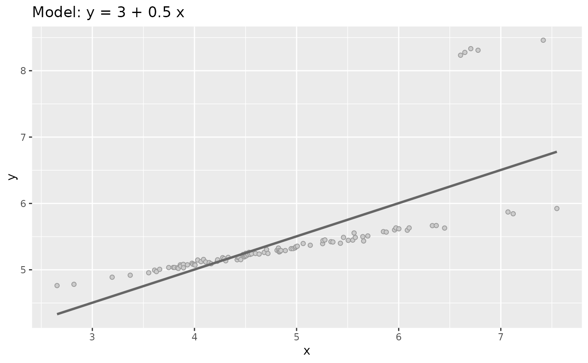
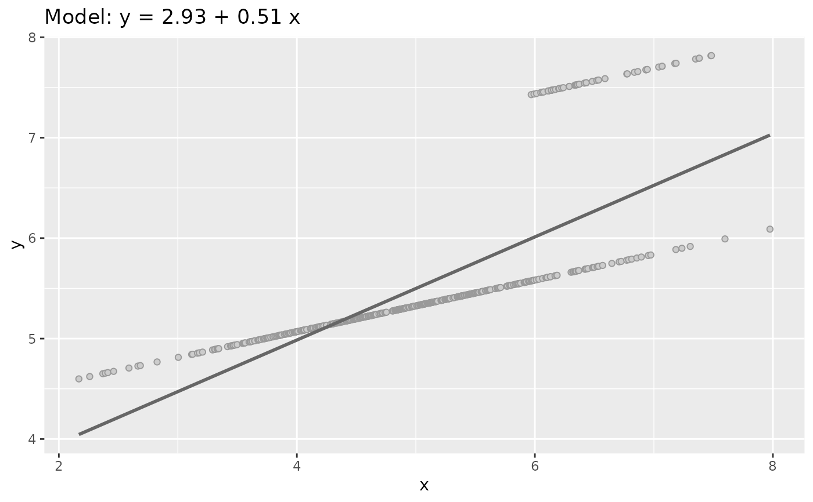

sim_quasianscombe_set_3.RdData sets Type 3 get some outliers but conserving the $x$ mean and the same coefficients -but different significance- of the adjusted linear model.
sim_quasianscombe_set_3(
df,
prop = 0.05,
beta1_factor = 0.5,
residual_factor = 0.25
)A data frame from sim_quasianscombe_set_1 (or similar).
The proportion of value to modify as outliers.
Numeric value to modify the beta1 value.
Numeric value to multiply residual to modify their variance.
This function will:
Calculate the linear regression model and will calculate new trend usingo 0.5 times beta1
Take prop% values from the greater 2*prop x values and modify the
related y value to get the original estimation of beta1
Apply residual_factor factor to residual to get minor variance and
better visual impresion of the outlier effect.
df <- sim_quasianscombe_set_1()
dataset3 <- sim_quasianscombe_set_3(df)
dataset3
#> # A tibble: 100 × 2
#> x y
#> <dbl> <dbl>
#> 1 2.65 4.98
#> 2 2.82 4.80
#> 3 3.19 5.02
#> 4 3.37 4.93
#> 5 3.55 4.89
#> 6 3.61 5.15
#> 7 3.63 4.89
#> 8 3.66 5.17
#> 9 3.75 5.24
#> 10 3.79 5.15
#> # … with 90 more rows
# plot(df)
plot(dataset3)

plot(sim_quasianscombe_set_3(df, prop = 0.1, residual_factor = 0))
